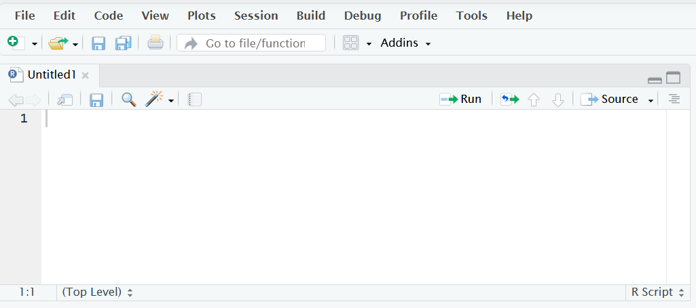
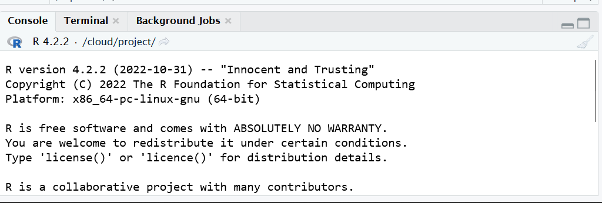
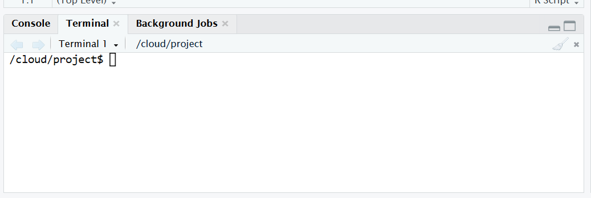
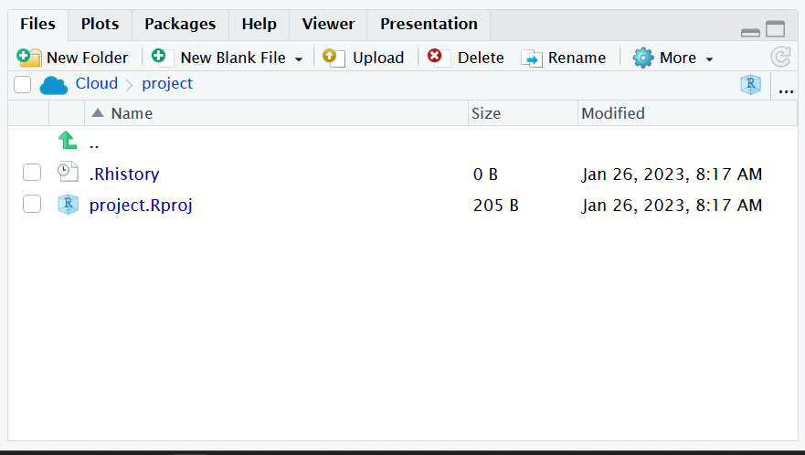

3 🫀 Anatomy of IDE interface
3.1 Main panel

- This is where you will write all of your code.
- As we will talk about in the next section, your code is passed/sent to the
consolewhich actually is what evaluates/runs your code. - However, you need to document your code. So you will write a
scriptso that you can save all of the code you wrote. Think of a script as a document outlining the steps you took to perform your analysis. - You write your
scriptin this main panel
- As we will talk about in the next section, your code is passed/sent to the
3.2 Console

- When you run code from a
script, you send your code to your Rconsole. This is done by either highlighting your code and using the shortcut ctrl enter ( ⌘ return on Mac) or hitting therunbutton at the top of your main panel. - The code you write is evaluated and ran by your R
console.
3.3 Terminal

- The
terminalis also an area to run code. This often runs a different coding language (i.e.bash) which is a coding language that tells your computer what to do from a systems standpoint.
3.4 Environment

- The
environmentdisplays yourcached(temporarily saved)objectsthat you create with your R code.- We will elaborate a bit more later on this point.
- But this lets you see things that you’ve temporarily stored from your code.
3.5 Files

- Let’s you see what files and where you have them on your computer.